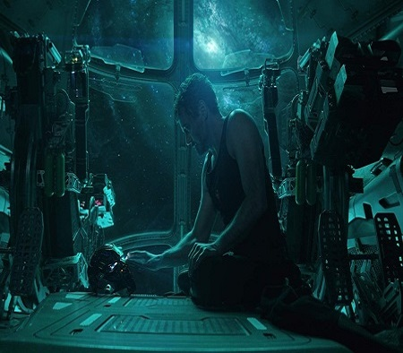
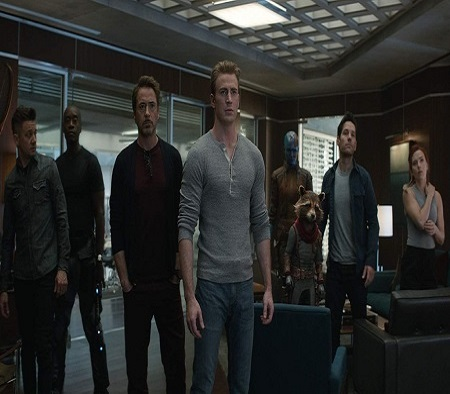
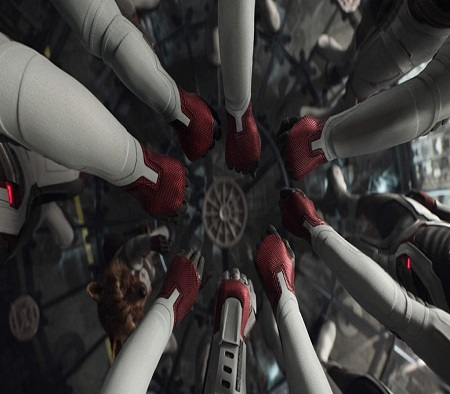
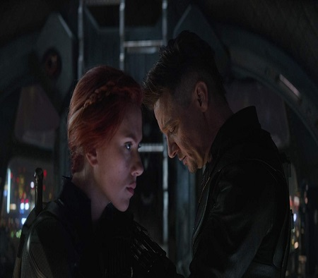

Três semanas depois de Thanos (Josh Brolin) usar a manopla com as pedras do infinito para desintegrar
metade da população do universo, Tony Stark/Homem de Ferro (Robert Downey Jr.) e Nebula (Karen Gillan)
são resgatados no espaço por Carol Danvers/Capitã Marvel (Brie Larson). De volta à Terra, os três se
reúnem com Natasha Romanoff/Viúva Negra (Scarlett Johansson), Steve Rogers/Capitão América (Chris
Evans), Bruce Banner/Hulk (Mark Ruffalo), Thor (Chris Hemsworth), Rocket (Bradley Cooper) e Máquina de
Guerra/James Rhodes (Don Cheadle), os quais já vasculharam todo o globo atrás de Thanos. Com a ajuda de
Nebula, um ferido Thanos é localizado num planeta distante, mas as pedras do infinito foram destruídas
para evitar que seu plano seja desfeito. Furioso, Thor o mata com sua nova arma, o machado do poder,
Stormbreaker.

Cinco anos depois, Scott Lang/Homem Formiga (Paul Rudd) consegue finalmente escapar do universo quântico
no qual foi inserido ao final de Homem Formiga e a Vespa (2018), onde, para ele, passaram-se apenas
cinco horas. Depois de descobrir o que aconteceu através da filha, uma agora crescida Cassie (Emma
Fuhrmann), ele vai à sede dos Vingadores, onde encontra Natasha e Steve, e teoriza a possibilidade de
voltarem no tempo através do universo quântico para reverterem a concretização do plano de Thanos e
salvarem todos que foram desintegrados.
Os três vão ao encontro de Tony, o qual agora mora numa cabana isolada com sua agora esposa Pepper Potts
(Gwyneth Paltrow) e a filha do casal, Morgan (Alexandra Rachael Rabe). Temendo perder a filha, Tony se
recusa a ajuda-los no plano de desenvolver uma máquina do tempo e voltar ao passado. Steve, Natasha e
Scott recorrem então à Bruce Banner, que agora conseguiu um meio termo entre ser o cientista e o Hulk,
tendo se transformado numa criatura com a metade do tamanho do Hulk de antes, mas com a consciência de
Banner. Na sede dos Vingadores, com a ajuda de Banner, testes de viagem no tempo usando a tecnologia do
universo quântico são feitos, mas os resultados são desastrosos. Depois de refletir sobre a
desintegração de seu pupilo, Peter Parker/Homem-Aranha (Tom Holland), Tony finalmente decide ajudar
Steve e os demais. Com a estabilização do efeito da viagem no tempo, Natasha, Bruce e Rocket tentam
reunir os demais membros dos Vingadores para colocarem o plano em prática.

Natasha vai ao encontro de Clint Barton/Arqueiro Negro (Jeremy Renner), o qual, depois de perder toda a
família—desintegrada por Thanos—, tornou-se um sombrio vigilante nas ruas de Tóquio, enquanto Banner e
Rocket vão à colônia de Nova Asgard, na Noruega, onde Valquíria (Tessa Thompson) levou boa parte dos
asgardianos antes da destruição da nave que os deveria levar para um lugar seguro ao final de Thor:
Ragnarok (2017) e inicio de Os Vingadores: Guerra Infinita, e onde descobrem que Thor se tornou um
bêbado recluso depois da mal sucedida batalha com Thanos.
Lang e Stark falham em conseguir a Tesseract, a pedra azul do espaço, a qual é roubada pelo Loki (Tom
Hiddleston) de 2012, o qual desaparece pouco depois de sua captura em decorrência dos eventos havidos em
Os Vingadores (2012). Sem a intenção de voltarem com as mãos vazias, Rogers e Stark usam o último fresco
de partículas desenvolvidas por Hank Pym (Michael Douglas) para alterar o tamanho e viajar para a sede
da S.H.I.E.L.D. em 1970 com fins de roubar uma versão anterior da pedra do espaço que se encontra em
frascos nos laboratórios de Pym. Ali, Tony tem um emocionante encontro com seu pai, Howard Stark (John
Slattery), com o qual troca conselhos sobre paternidade, enquanto Steve revê o grande amor de sua vida,
Peggy Carter (Hayley Atwell), a qual jamais o esqueceu.

Paralelamente, Thor e Rocket viajam para Asgard em 2013 com fins de recuperar a pedra vermelha da
realidade que se encontra com Jane Foster (Natalie Portman) durante os acontecimentos de Thor: Mundo
Sombrio (2013). Ao lembrar que naquele dia sua mãe, Frigga (Rene Russo), seria morta, Thor tenta mudar o
passado, mas ela recusa querer saber ou ajuda-lo à mudar o que vai acontecer, enquanto Rocket consegue a
pedra da realidade com Jane. Os dois voltam ao presente, não sem antes Thor conseguir seu antigo martelo
do poder, Mjolnir. O terceiro e último grupo que volta no tempo é composto por Natasha, Rhodes, Nebula e
Clint, os quais viajam para 2014. Enquanto Natasha e Clint vão atrás da pedra laranja da alma no planeta
Volmir, Rhodes e Nebula vão ao planeta Morag para conseguirem a pedra roxa do poder antes que Peter
Quill (Chris Pratt) a encontre na cena inicial de Guardiões da Galáxia (2014). Ao descobrirem através do
Caveira Vermelha (Ross Marquand), guardião da pedra laranja da alma, que para consegui-la, alguém que
eles amam deve ser sacrificado, Natasha e Clint brigam para salvar um ao outro. No final, num dos
momentos mais dramáticos do filme, Natasha consegue se sacrificar atirando-se do mesmo penhasco de onde
Thanos empurrou Gamorra (Zoe Saldana) no filme anterior. Nesse meio tempo, depois de conseguirem a pedra
roxa, Rhodes e Nebula se preparam para voltar no tempo, mas por conta de seus implantes cibernéticos,
Nebula sofre interferência de sua versão de 2014. Por conta de tal interferência, a versão de Thanos de
2014 descobre os planos dos Vingadores que visam reverter seu bem sucedido plano no futuro, ao que envia
a Nebula de 2014 para atacar a Nebula de 2023 e voltar no tempo em seu lugar.
ONo momento ápice da batalha, Danvers aparece e destrói a nave de Thanos, o qual consegue tomar a
manopla, prometendo destruir todo o universo e transforma-lo à sua imagem de modo que nada mais poderá
reverter seu plano. Rogers, Thor, Danvers e Stark lutam pela manopla, e depois de Thanos dar uma surra
em Rogers, Dr. Estranho sinaliza para Stark como sendo aquele o único entre os mais de 14 milhões de
futuros alternativos que ele previu que pode significar a destruição definitiva de Thanos, ao que Tony
toma as pedras do infinito de Thanos e estala o dedo para fazer com que todo seu exército e o próprio
Thanos sejam desintegrados, o que, ao final, custa-lhe a própria vida. Depois do dramático enterro de
Tony, Thor deixa Nova Asgard sob a liderança de Valquíria e parte em busca de um novo propósito com os
Guardiões da Galáxia que voltam para o espaço. Rogers, por seu turno, viaja no tempo para devolver
Mjolnir e as pedras do infinito aos seus devidos lugares, mas acaba decidindo ficar no passado com Peggy
Carter. No presente, um agora idoso Rogers encontra com Buck e Sam, e entrega seu escudo à este para que
assuma seu manto.

Os Vingadores: Ultimato definitivamente não decepciona como desfecho da saga das pedras do infinito.
Apesar da produção deixar à desejar quanto à trilha sonora—em contrapartida aos filmes anteriores da
franquia—e quanto ao lamentável rumo do personagem Thor depois de toda sua evolução em Thor: Ragnarok e
Os Vingadores: Guerra Infinita, o filme acerta ao novamente trazer com muita maestria todos os
personagens do universo cinemático Marvel em sub-narrativas separadas, reprisando o dinamismo do filme
anterior, e faz os fãs delirarem quando todos os personagens aparecem juntos em cena para a batalha
final com Thanos. Como encerramento de uma era dos filmes da Marvel, Os Vingadores: Ultimato cumpre sua
missão, e é certo dizer que os Vingadores originais saem definitivamente de cena para darem espaço agora
aos novos super-heróis do universo cinemático Marvel que devem retornar em seus filmes solo ou em séries
do vindouro sistema on streaming, Disney Plus..